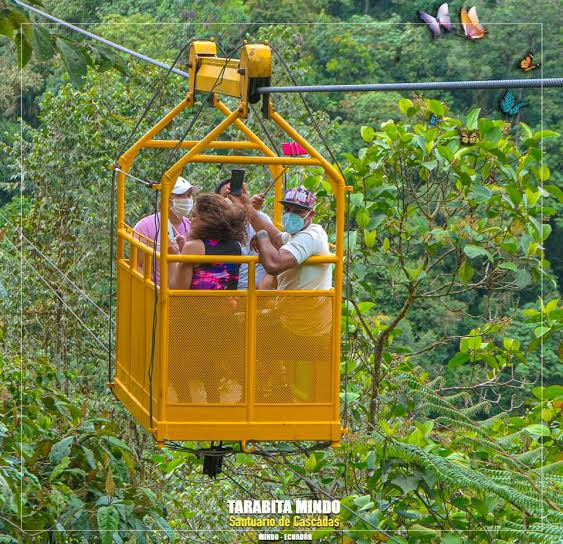
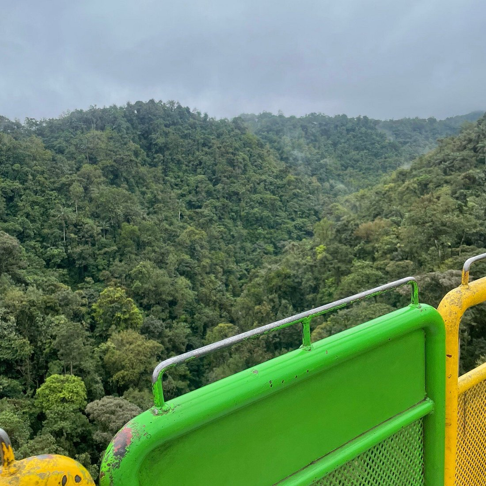

Descripción
La Tarabita de Mindo es un sistema de transporte colgante que cruza el valle del río Mindo a gran altura. Consiste en una cabina que se desliza sobre cables, permitiendo cruzar de un lado a otro del cañón. Es una experiencia emocionante que ofrece vistas panorámicas espectaculares sobre el río, el bosque y las montañas circundantes.
Ubicación Geográfica
Está ubicada cerca del centro del pueblo, cruzando el Río Mindo. Desde el parque central se llega caminando en unos 10 minutos.
Actividades para realizar
- Cruzar el valle en la tarabita y disfrutar de las vistas panorámicas
- Tomar fotografías impresionantes desde lo alto
- Caminar por los senderos del otro lado del río
- Observar el paisaje y la naturaleza del valle
Galería de Imágenes


